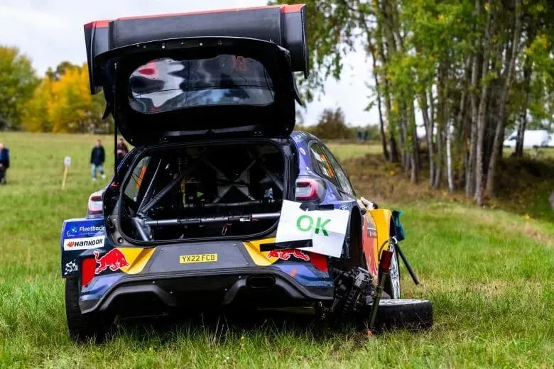
The Biggest Gaps in Pace Between Team-Mates in the WRC
In rallying, teams do not always field evenly matched driver lineups. Sometimes its because they wanted to give a chance to a younger driver, other times it's because said driver brought in a lot of money, or he was just a last resort signing.
Today we take a look at the 10 biggest gaps between teammates in terms of pace in the WRC, from the 2000 season to present day. The pairing has to have competed at least half of the season in the same team or the same entrant, with obvious gentleman drivers like Jourdan Serderidis or Khalid Al-Qassimi excluded for fairly obvious reasons.
All stats were gathered from the Powerslide WRC Stats Database! If you want to know more about how these numbers came about, feel free to check it out, and make your own comparisons while you're at it! Below every pairing you can find a comparison of how both drivers performed head-to-head that season, those tables come directly from the database.
10. Adrien Fourmaux vs Gregoire Munster - 2024 - 0.594s/km
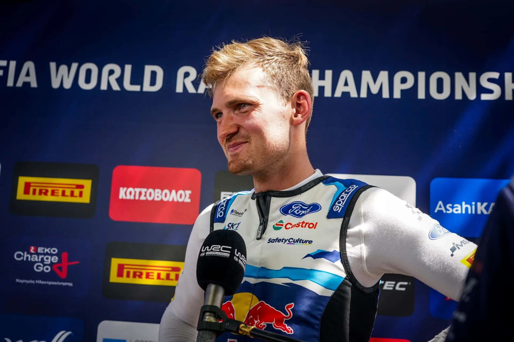
In 10th place we find the most recent inclusion on this list. 2024 was both Gregoire Munster's and Adrien Fourmaux's first full-time seasons in the WRC's top class, with the Frenchman having also competed in two partial campaigns in 2021 and 2022. Fourmaux was able to score five podiums in 2024, showcasing great speed, enough for him to be picked by Hyundai for 2025. On the other hand, Gregoire Munster struggled, being over a second per kilometer slower on average, scoring three top five finishes in attrition affected rallies.
The pair were closer on tarmac rallies, but rough gravel was where Munster was at his worst, being over a second per kilometer slower than Fourmaux in Portugal and Sardinia.
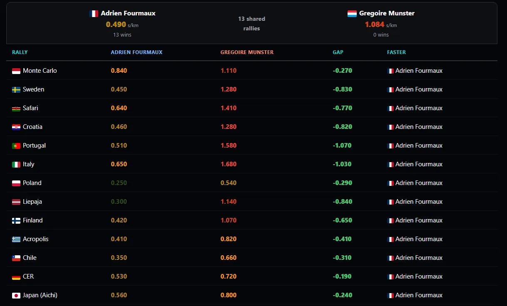
9. Sebastien Ogier vs Andreas Mikkelsen - 2013 - 0.606s/km
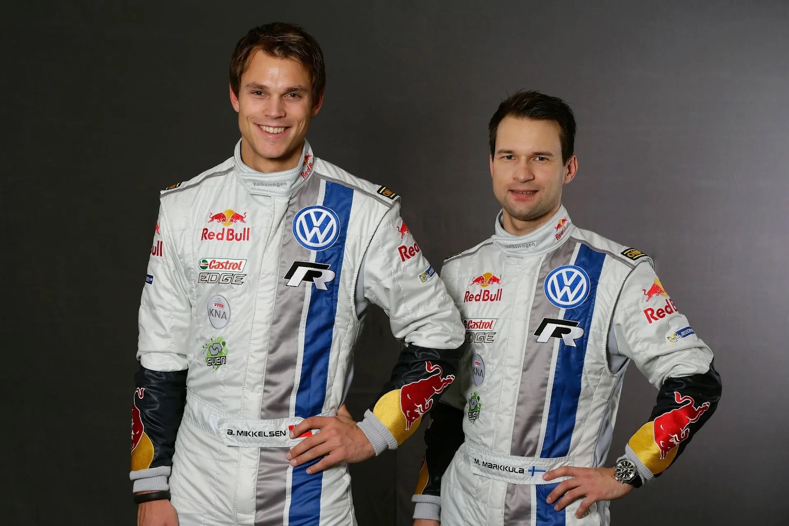
Volkswagen Motorsport / Red Bull Content Pool
Andreas Mikkelsen joined Volkswagen's roster of Polo WRC drivers mid-way through the 2013 season. It was the Norwegian's first campaign in the WRC's top class since 2008, if one was to exclude his outing in Rally Poland in 2009. This gap is more due to the fact that Sebastien Ogier was this dominant in 2013, with just a 0.12s/km average deficit, the lowest recorded average that I have on my database. Mikkelsen was consistently slower than the eventual champion Ogier, with their closest gap coming in Catalunya, where their gap was 0.370s/km in the stages both drivers completed.
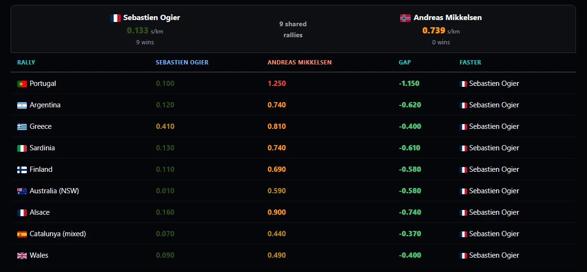
8. Petter Solberg vs Mikko Hirvonen - 2004 - 0.678s/km
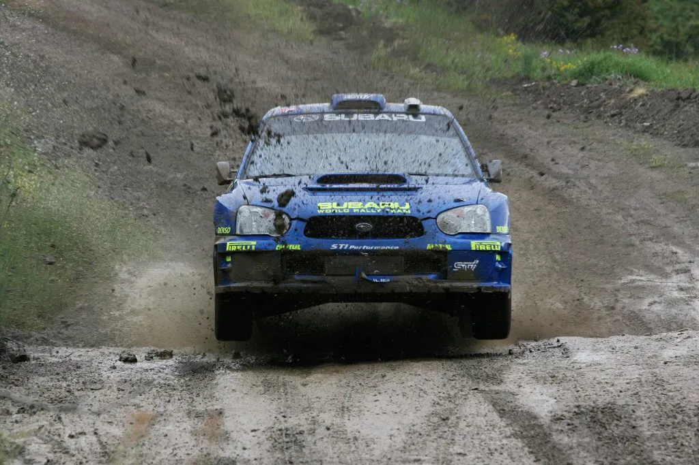
Petr Lusk / eWRC Results
Richard Burns' diagnosis and Subaru's inability to come to terms with Colin McRae gave Mikko Hirvonen the chance to replace Tommi Makinen as the team's number two driver for the 2004 season. Hirvonen had competed in most of the rounds of the 2003 season with Ford, driving a Ford Focus RS WRC from 2002. The Finn had showed some promise, but the opportunity he was given for 2004 came too early for him. Solberg went 14-0 with Mikko in this head-to-head, with Hirvonen ending the season a second per kilometer slower than the optimal pace.
Thankfully for Hirvonen, he would showcase an uptick in form in 2005, earning his first ever podium finish in Rally Catalunya. His performances that year would see him earn a spot in Ford's factory team for 2006, with whom he'd stay until 2011, challenging for the title on two occasions.
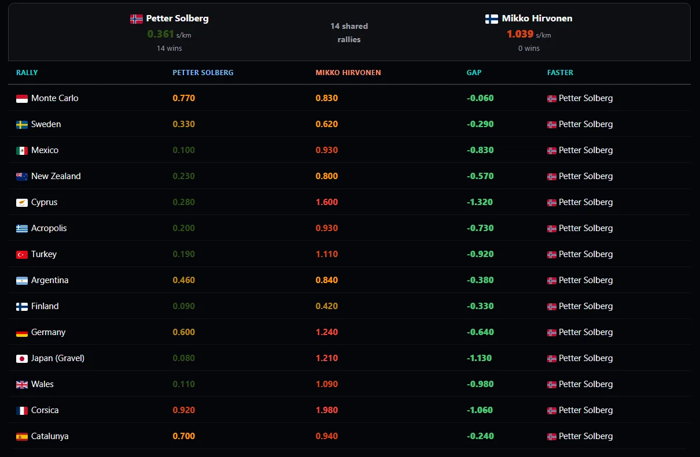
7. Tommi Makinen vs Freddy Loix - 2001 - 0.691s/km
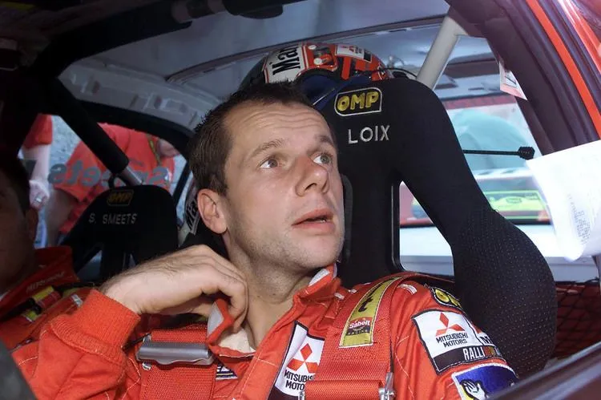
2001 was an end of an era for Mitsubishi, as it was the last season of their Group A Lancer, with the Evo being replaced for the Lancer WRC mid-way through the campaign. Unfortunately for Mitsubishi, the car would prove a downgrade in all areas, leading to Tommi Makinen leaving the team for 2002.
Loix's year was disappointing, as was often the case for his stint in Mitsubishi (sorry Freddy). He was consistently slower than Makinen, only managing to have a performance less than a second per kilometer in a rally twice - in Catalunya and Greece. From Safari onwards, the Belgian would score 0 points, with his highest finish that year being 4th place in Catalunya.
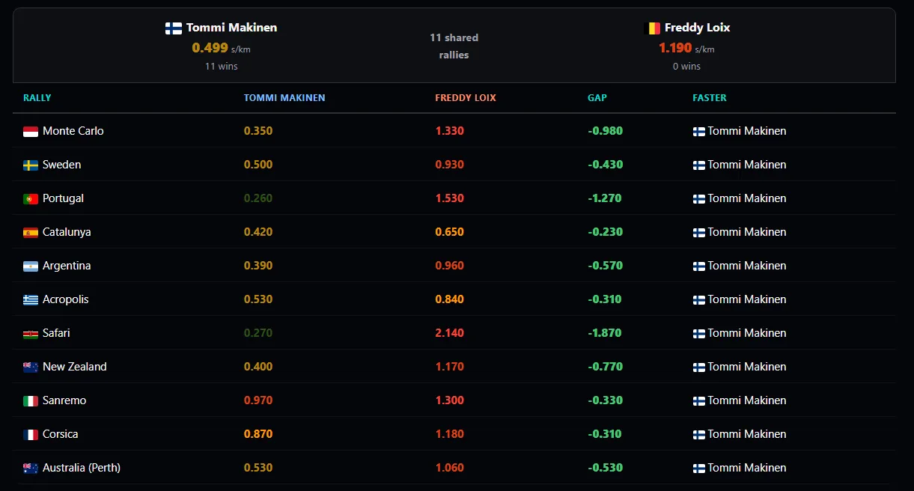
6. Sebastien Ogier vs Takamoto Katsuta - 2020 - 0.798s/km
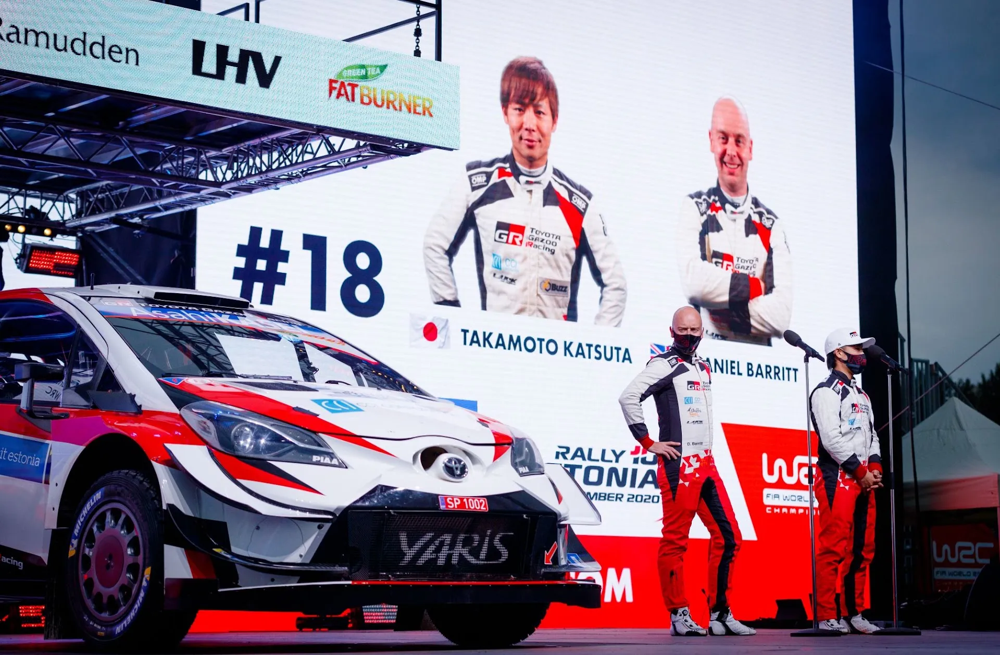
Jarek Jõepera / Red Bull Content Pool
Following two outings in the Yaris WRC in 2019 in the World Rally Championship, Takamoto Katsuta was rewarded with a nine-rally campaign for the 2020 season. Unfortunately for the Japanese driver, the COVID-19 pandemic sliced that almost in half, with Katsuta competing in all of the rallies in 2020 apart from Mexico and Turkey, in that hastily put together 2020 calendar.
Although he showed promising pace in Estonia before rolling his Yaris WRC and retiring, Katsuta was on average nearly 0.8s/km slower than his vastly more experienced teammate Sebastien Ogier, who would go on to secure the world title that year. The season ended on a difficult note for Katsuta, as he retired from the final three rounds due to self-inflicted mistakes, rolling in both Estonia and Sardinia, before a very public mistake in Monza, with the Japanese driver sliding on the grass and into the wall.
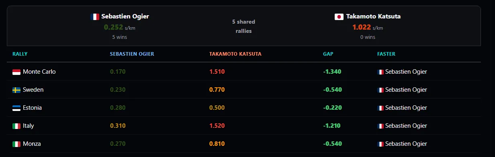
5. Armin Schwarz vs Luis Climent - 2000 - 0.805s/km
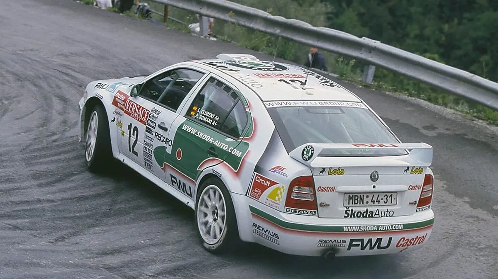
Skoda Motorsport
This was very much a case of the one-eyed leading the blind. Armin Schwarz was the fastest of the Skodas. Problem was... he was almost 2s/km slower than the ideal pace. The Skoda Octavia was woeful in 2000, much like it was in 1999, with Schwarz only managing one points finish, in Acropolis. He was still 1.76s/km slower than eventual winner Colin McRae. Luis Climent really did not perform any better, only beating Schwarz's average pace in Safari - an event both driver's were over 3.5s/km slower in...
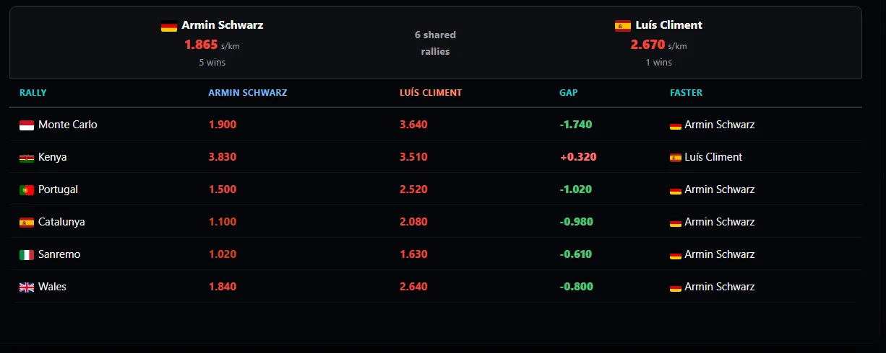
4. Petter Solberg vs Stephane Sarrazin - 2005 - 0.881s/km
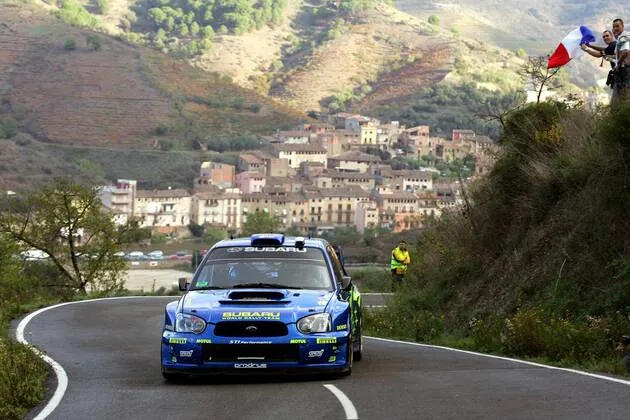
Stephane Sarrazin's three entries in a privately entered Subaru in 2004 where good enough to convince Prodrive to give the Frenchman and two-times 24h of Le Mans winner a partial campaign with the factory team. Unfortunately for Sarrazin, his 2005 WRC campaign would not be a good one. Apart from Germany, where the Frenchman was the fastest of the Impreza WRCs, and Corsica where he equaled his career best finish, Sarrazin was off the pace, especially in non-tarmac rallies.
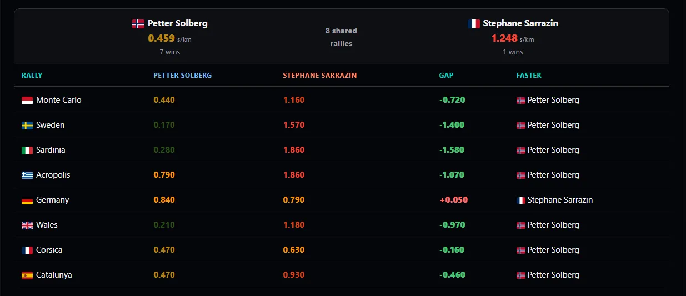
3. Sebastien Loeb vs Dani Sordo - 2006 - 0.856s/km &
2. Sebastien Loeb vs Xavier Pons - 2006 - 1.174s/km
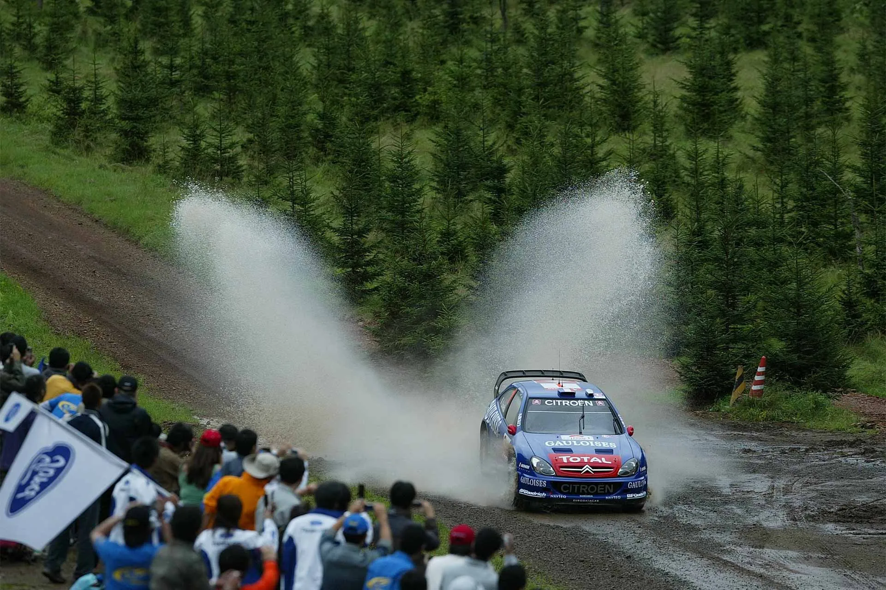
This one is a double entry! 2006 saw Citroen take a break for one season to develop the C4 WRC. In the meantime, Kronos was the de facto factory team for 2006, a year that saw only two fully fledged manufacturer teams, Subaru and Ford. Sebastien Loeb's teammates in Kronos that year were two Spaniards, Xevi Pons and Dani Sordo. Pons had been part of Kronos Citroen in 2005, competing in some events on the latter half of the season alongside Manfred Stohl, with Dani Sordo making his debut in the WRC's top class after winning JWRC the previous year.
Pons was in all honesty someone who could never challenge Loeb, with crashes and rants against co-driver Carlos del Barrio when things wouldn't go his way, being the things most people associate with his stint in the WRC.
Dani Sordo fared better than his fellow Spaniard, achieving podium finishes in Catalunya and Corsica, eventually replacing Pons as the team's number 2 driver following the Acropolis Rally. Pons was more than a second per kilometer slower than Loeb in the majority of the events both competed in, eventually being handed the #1 Xsara following the Frenchman's injury.
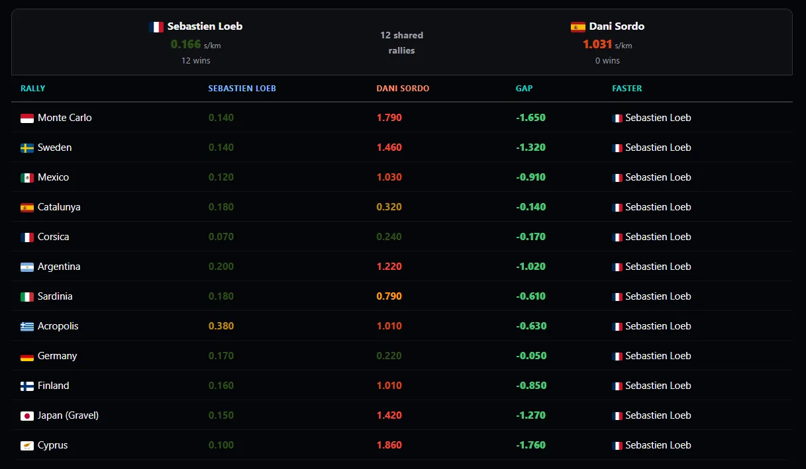
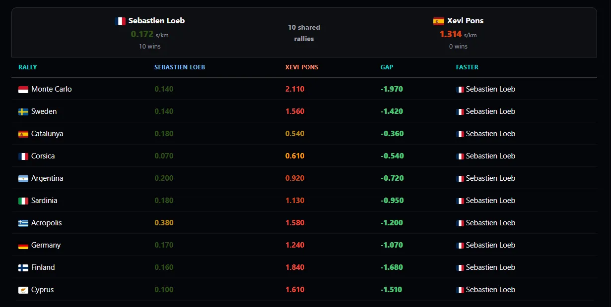
1. Sebastien Ogier and Dani Sordo vs Kimi Raikkonen - 2010 - 1.405s/km
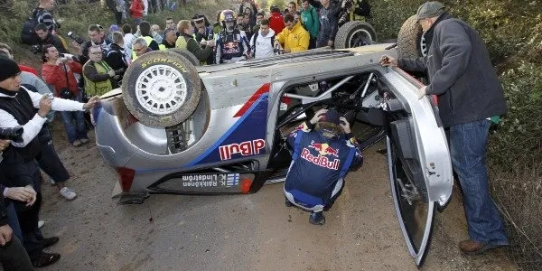
Kimi Raikkonen went on a sabbatical from Formula 1 at the end of 2009, just one year removed from his F1 Drivers' Championship win. The Finn dabbled on other motorsport disciplines in his two years off the sport, including Nascar, but it was rallying where the Finn spent most of his time in. Raikkonen joined Citroen's Junior team for 2010 on a full-time campaign basis. The Finn wouldn't have it easy, as he would have Sebastien Ogier as his teammate, with the future 9-times champion entering his sophomore season. Raikkonen was off the pace, by a lot. The Finn was more than a second per kilometer slower in the rallies he competed in that season, with his best performance coming in Rally Bulgaria, where he was running as high as 4th place before going off the road. In the stages he competed in, he was actually faster than Jari-Matti Latvala.
Dani Sordo was Raikkonen's teammate for three events following Ogier's win in Portugal, but the difference was on a similar level to before. The Finn would compete on a partial campaign the following year, before calling it quits, and returning to Formula 1 with Lotus in 2012, achieving three more victories, retiring at the end of the 2021 season.
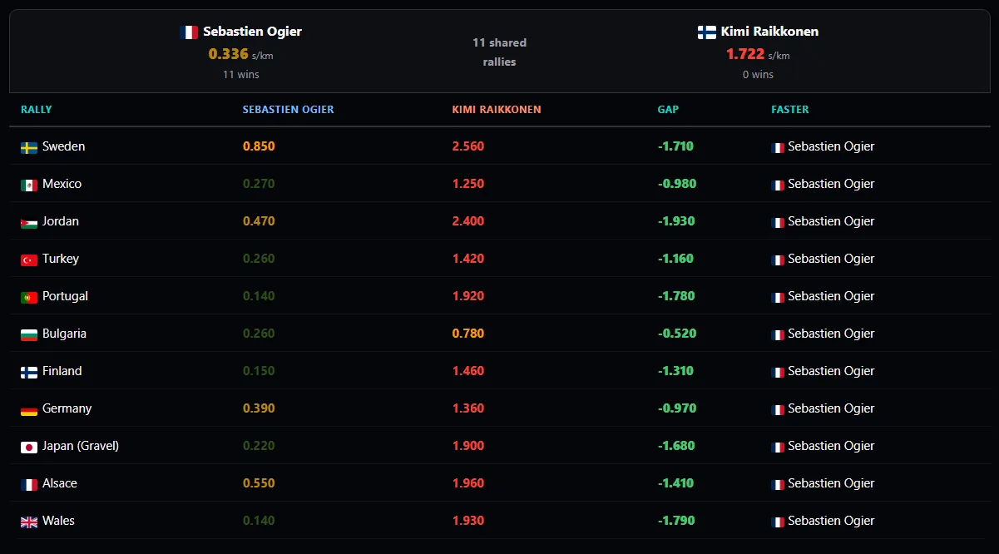
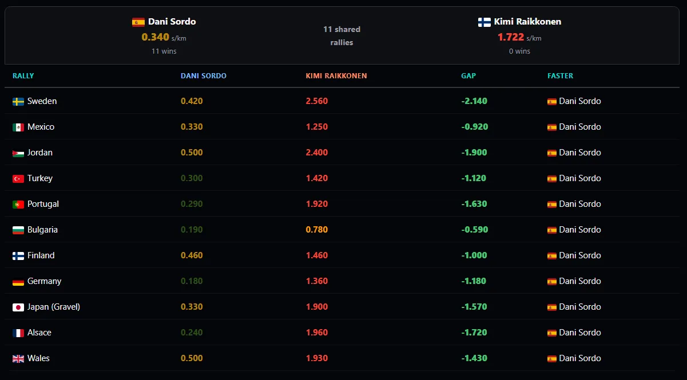
So what did you think of this list? Did any of these entries surprise you? Would you like to see more posts like this from Powerslide? Let us know in the comments!


Comments